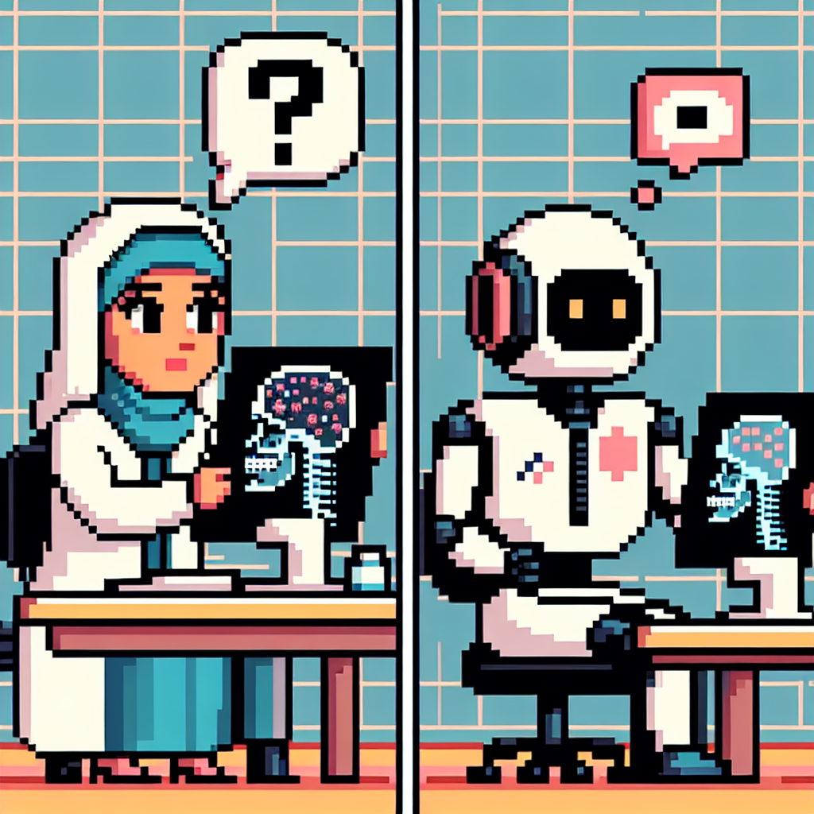

Why AI will never replace the radiologist
In his blog post titled "Why AI will never replace the radiologist," Python instructor Jose delves into the intersection of technology, machine learning, and radiology. He discusses the limitations and challenges of implementing AI in the field of radiology, outlining why he believes that artificial intelligence will never fully replace the expertise of a radiologist.
Jose's insightful analysis sheds light on the potential drawbacks and implications of relying solely on machine learning algorithms in a critical medical field like radiology. His perspective offers a balanced view of the role that technology can play in healthcare while emphasizing the unique skills and value that human professionals bring to the table.
Stay tuned for more thought-provoking insights and discussions from Jose on his website!